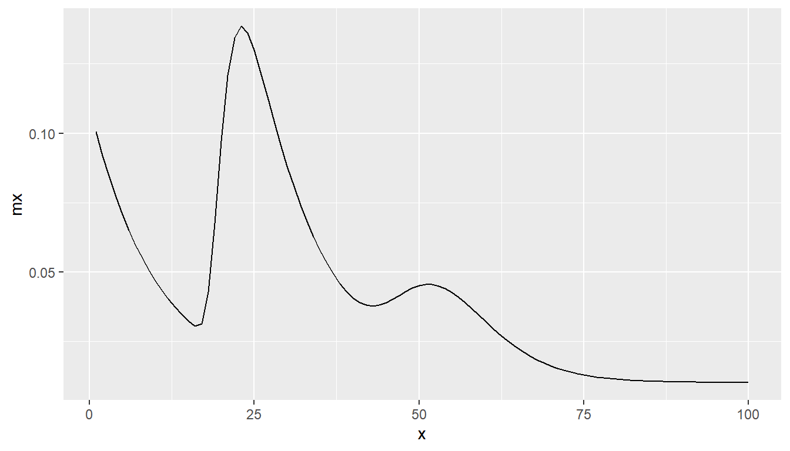

Chapter 8 Rogers Castro
8.1 .
8.1.1 Rogers Castro migration age schedules
- Populations tend to experience demographic events, such fertility, mortality and migration, with persistent regularities in the age-specific rates
- Demographers have summarsied regularities in rates using mathematical expressions called model schedules.
- Rogers and Castro (1981) first proposed a migration model schedules via an analysis of over 500 age profiles of migration
8.1.2 Rogers Castro migration age schedules
Composed of curves based on migration of different life stages:
- Pre-labor force
- Labor force
- Post-labor force
- Post-retirement
- A constant term
\[ \begin{aligned} m(x) =& a_1 \exp(-\alpha_1 x) \\ &+a_2 \exp(-\alpha_2(x - \mu_2) - \exp(\lambda_2(x - \mu_2))) \\ &+a_3 \exp(-\alpha_3(x - \mu_3) - \exp(\lambda_3(x - \mu_3))) \\ &+a_4 \exp(\lambda_4x)\\ &+ c \end{aligned} \]
8.1.3 Rogers Castro migration age schedules
8.1.4 Rogers Castro migration age schedules
- Most migration age patterns have a pre-labor force downward slope and labor force peak (and a constant)
- 7-parameter model schedule
- In specific areas (in Western countries) migration age patterns have an additional retirement peak component
- 11-parameter model schedule
- In other areas, instead of a retirement peak, age profiles have an upward slope at the end of life
- 9-parameter model schedule
- In even fewer cases, some instances of both a retirement peak and a post-retirement upward slope Rogers and Watkins (1987)
- 13-parameter model schedule
- Wilson (2010) introduced a 17-parameter model to incorporate a student peak before the labour force peak.
8.1.5 Rogers Castro migration age schedules
- The
mig_calculate_rc()function in either the DemoTools package by Tim Riffe et. al.or the rcbayes package by Monica Alexander et. al.provide a quick method to calculate migration age schedules for a given parameter set- Same functions by same authors. Both packages currently not on CRAN. Availability might change.
# install from github
# install.packages("devtools")
library(devtools)
# might need to specify download.file.method
# options(download.file.method = "libcurl")
install_github("timriffe/DemoTools")
# and/or
install_github("jessieyeung/rcbayes")8.1.6 Rogers Castro migration age schedules
library(DemoTools)## Loading required package: Rcpp# define 11 parameters
p <- c(a1 = 0.1, alpha1 = 0.1,
a2 = 0.2, alpha2 = 0.1, mu2 = 20, lambda2 = 0.5,
a3 = 0.05, alpha3 = 0.2, mu3 = 60, lambda3 = 0.1,
c = 0.01)
# calculate model migration schedule with 11 parameters
mx <- mig_calculate_rc(ages = 1:100, pars = p)
mx## [1] 0.10048374 0.09187308 0.08408182 0.07703200 0.07065307 0.06488116
## [7] 0.05965853 0.05493290 0.05065697 0.04678794 0.04328711 0.04011942
## [13] 0.03725318 0.03465970 0.03231470 0.03037404 0.03132289 0.04264948
## [19] 0.06746077 0.09710942 0.12091621 0.13442550 0.13855839 0.13616639
## [25] 0.12995494 0.12185875 0.11308333 0.10431583 0.09591794 0.08806055
## [31] 0.08080783 0.07416691 0.06811661 0.06262465 0.05765908 0.05319728
## [37] 0.04923336 0.04578295 0.04288297 0.04058442 0.03893812 0.03797602
## [43] 0.03769285 0.03803360 0.03889051 0.04011081 0.04151310 0.04290860
## [49] 0.04412234 0.04501067 0.04547234 0.04545269 0.04494158 0.04396660
## [55] 0.04258384 0.04086761 0.03890096 0.03676762 0.03454596 0.03230498
## [61] 0.03010206 0.02798231 0.02597892 0.02411422 0.02240126 0.02084543
## [67] 0.01944616 0.01819839 0.01709398 0.01612274 0.01527339 0.01453424
## [73] 0.01389365 0.01334046 0.01286417 0.01245512 0.01210453 0.01180452
## [79] 0.01154811 0.01132916 0.01114229 0.01098283 0.01084676 0.01073060
## [85] 0.01063138 0.01054657 0.01047399 0.01041181 0.01035847 0.01031264
## [91] 0.01027319 0.01023918 0.01020981 0.01018438 0.01016234 0.01014319
## [97] 0.01012651 0.01011196 0.01009924 0.010088108.1.7 Rogers Castro migration age schedules
library(tidyverse)
tibble(x = 1:100,
mx = mx) %>%
ggplot(mapping = aes(x = x, y = mx)) +
geom_line()
References
Rogers, Andrei, and Luis J. Castro. 1981. Model Migration Schedules. RR-81-30. Vol. 81. Laxenburg, Austria: International Institute for Applied Systems Analysis. http://webarchive.iiasa.ac.at/Admin/PUB/Documents/RR-81-030.pdf.
Rogers, Andrei, and John Watkins. 1987. General Versus Elderly Interstate Migration and Population Redistribution in the United States. Research on Aging 9 (4): 483529. https://doi.org/10.1177/0164027587094002.
Wilson, Tom. 2010. Model migration schedules incorporating student migration peaks. Demographic Research 23 (8): 191222. https://doi.org/10.4054/DemRes.2010.23.8.